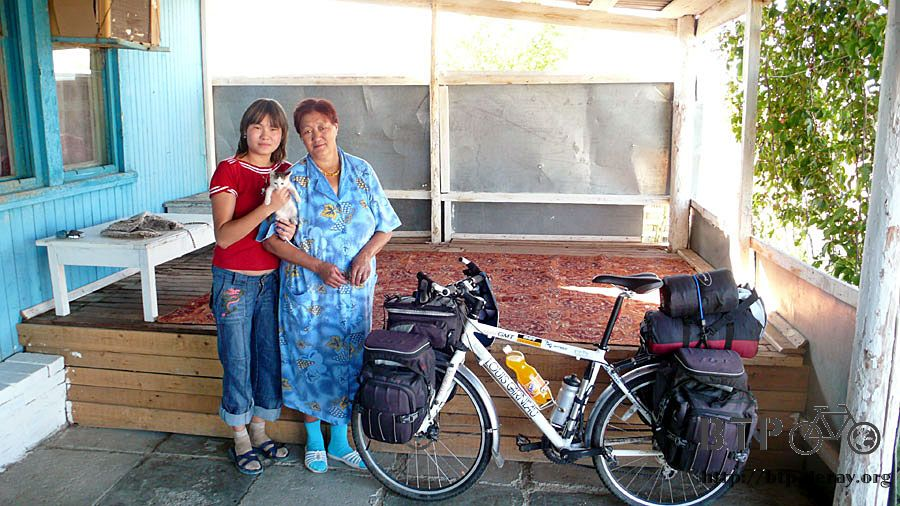
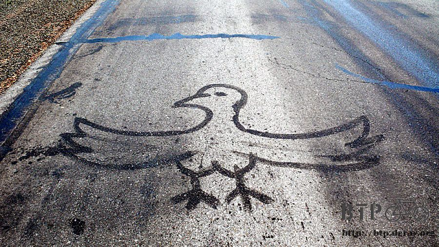
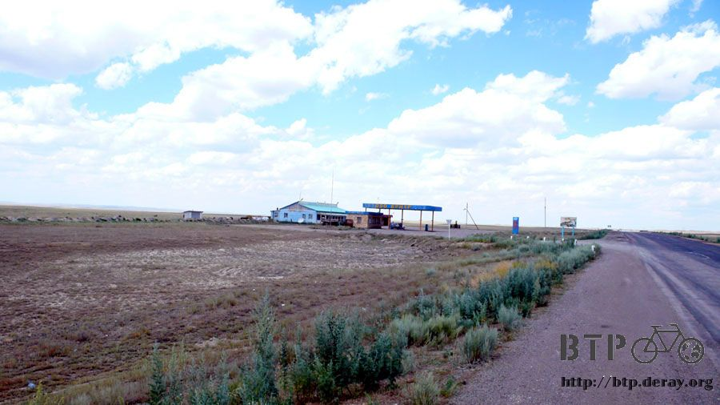
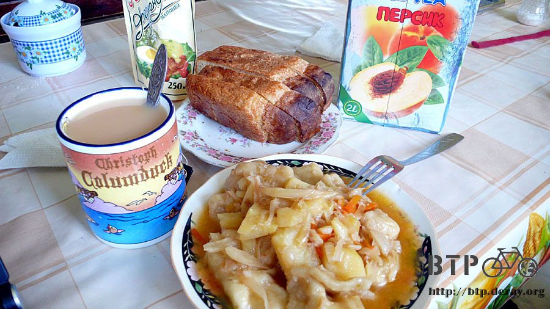
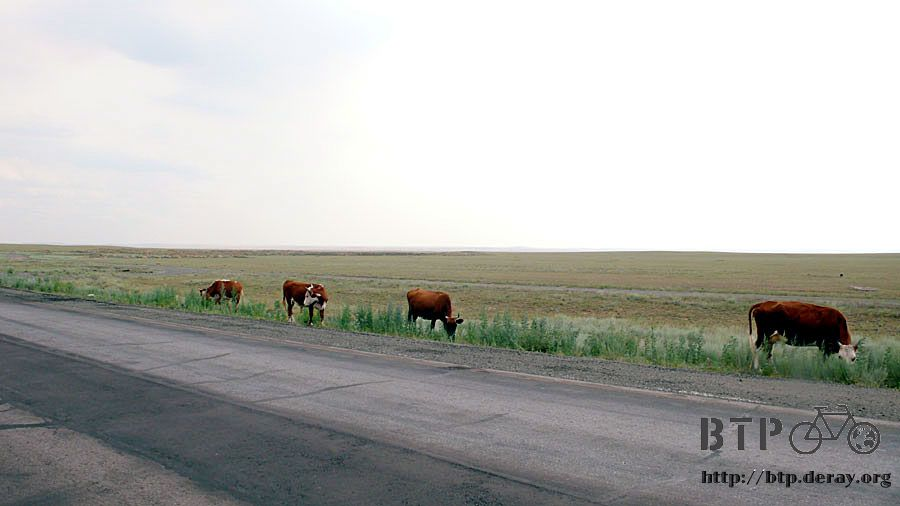
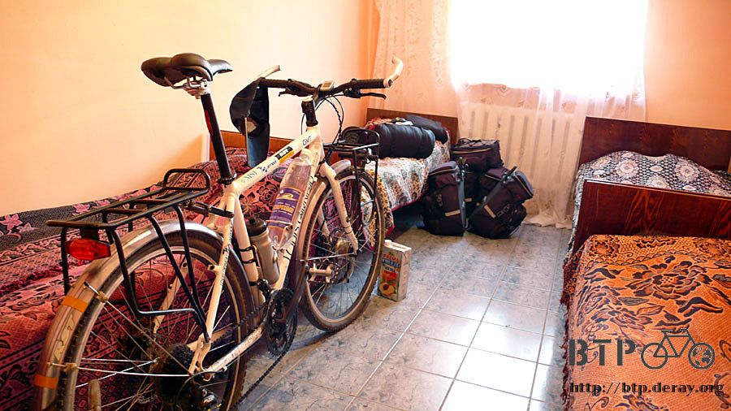

Friendship on Wrist
I was not too sure if Granny and Sartana got up early to cooperate with me.
I was about to wash up, and my tent was not packed up yet when they got out of bed.
I greeted granny with “good morning” in Chinese. Woops!
Perhaps it was too homey and relaxing, I forgot that I was in Kazakhstan.
Breakfast was hot milk tea, hot coffee and bread – simple but tasty.
Sartana was busy getting a bunch of crackers on the table saying that granny wanted me to carry them on the road.
I had seen the same crackers in restaurants and also bought some in grocery stores myself.
They were not cheap. They gave me four bags with different flavors.
They did not charge me for breakfast and the crackers.
I quietly tucked a small 200 KZT bill in Sartana’s pocket as her allowance.

Right before I left, Sartana kept saying “labanmi” “labanmi” to me.
New word, never heard of it. She pointed her necklace and bracelet.
Did she mean to exchange souvenirs?
It reminded me of Kepa where I stayed one night a few days ago.
Right before I left the next morning, Guyweidian said “souvenir” in English and then gave me his resume.
Looking at his resume where WORD, EXCEL were listed in the skill set section, so far,
I had not yet seen any other computer except mine in Kazakhstan. I was puzzled, but accepted it as a souvenir.
If so, I gave her the amber bracelet I bought in Urumqi.
However, I did not feel “labanmi” meant exchanging souvenir because when Sartana received the bracelet,
she ran back to the house and told granny that she said “labanmi” to me but I gave her a bracelet.
It could be a good thing that we did not understand each other.
A misunderstanding might become some nice story.
Even though I did not understand Kazak, I did not focus on not being able to communicate.
When people talked to me, I attentively read their body language, eye contact and tone of voice.
Usually I could get the gist of it.
Don’t deny ourselves the communication ability.
Sartana ran out of the house and put on a swoosh-brand black wristband on my right hand
where I used to wear the amber bracelet. She was wearing the amber bracelet on her left hand.

It was not easy to take a picture of granny. It seemed that old people were shy in front of camera.
Sartana helped me to get granny for me to take a photo.

Waving goodbye, after riding less than a 100 meters,
I started wondering why the sun was so bright that it hurt my eyes.
Didn’t my sun hat do the job any more?
Then I found out that I forgot my hat, so I returned to granny’s in search of the hat.
Granny asked me what I was looking for.
I pointed to my head saying my hat seemed to be left here. As I touched my head, I realized that I was wearing my hat.
It was very embarrassed to be an idiot in the early morning, saying goodbye again. I was really heading off!
I was riding toward the north; therefore the sun was on my right side in the morning and on my left side in the afternoon.
I had to wear my hat at a different angle with the sun; otherwise it wouldn’t block the sun at all.
However, having the hat tilted on my head, the wind blew it away from time to time.
I had to stop and go back to pick up the hat all day long.
Every time I stopped for my hat, I took a break and drank water. Picking up my hat became taking a break.
It might sound stupid that looking for a “lost” hat on my head.
Something worse happened in the morning.
During packing up I could not find my orange raincoat anywhere, even though I went through everything.
The last time I put it on was riding out of Urumqi in heavy rain,
and the last time I remembered seeing it was the large scale clean out I did at the border town Huoerguosi.
I was very sure that I saw it then.
How come it disappeared without a trace after a couple of days of riding?
I never realized its value until I lost it. When I had the raincoat, I was always too lazy to wear it in the rain.
From now on, even though I wanted to wear it in heavy rain I had nothing to put on.
Hopefully I could find a shelter when it rained and won’t have heavy rain during the rest of trip – another 100 days or so.
I had fully recovered from the sound and restful sleep from noon to night and night to morning after a good meal at granny’s!
I had never felt better.
When hopping on my bike I felt like riding a good 150 km today toward the capital city and seeing if I could arrive a bit early.
The same old scenery along the road day after day that one stretch of road up and down in the stark steppe,
which I had been used to after a while.
The landscape did not change much. However, the road surface was getting bad,
road workers would even paint the white line (road marking) with tar. Some of the tar started melting in the intense sun.
The tar stuck to wheels easily. I had no choice but rode in the middle of the lane to avoid it,
and gave way to trucks when they came by.

The road workers must have been bored to death during their work, in addition to painting the road marking with tar,
they also used tar to draw on the road surface along the road, such as a naked woman
, a 卍 , strange slogans, funny animals and so on. It was like holding a kids’ art show.

Passing a few houses along the road, I still had a bottle of Fanta bought at granny’s
and full bottles of water so I did not stop for shopping.
A young camel man bravely stopped a container car. Wasn’t it impossible to hitchhike with a camel?
Or to sell the driver his camel?

An interesting road sign which means:
“If you had a car break down in the middle of nowhere, or any emergency occurs and you need help,
you shouldn’t worry, an SOS phone can be found 70 km away”

Only one SOS phone was located in 70 km?
It would be more efficient and faster to replace the road sign with “God Bless You” or “Amitoufo”.
[Amitoufo is a Buddhist chanting]
Near noon time, I opened up the peanut butter sandwich crackers,
drank up the soda for lunch, and then pushed on in full swing.
Around 1:00pm, a gas station with restaurant was in sight just as I started feeling a bit tired.

For my eyes, the photo was not just a picture that a camera captured,
but an intermediate way station for life which supplied me and allowed me to continue my journey.
I bought two liters of peach ice tea at the restaurant, quaffing a bit,
and then suddenly feeling cold in the air-conditioned restaurant.
Changing from hot outside to cool inside and drinking a cold beverage heartily, my body could not adjust accordingly.
I walked outside to take a sunbath and feel the warm wind readjust my body temperature.
I took a long break in the restaurant mainly for recharging and writing up the travel log for the last two days.
My brain was back in business and able to tell stories sensibly.

I had my lunch with the restaurant staff. I guessed they thought I was an Asian and did not speak Kazak at all,
so they brought in a plate of food mimicking eating food, and then asked me if I would like to eat?
Really simple and easy body language. If I could bring a plate of food with me,
I would have no problem traveling around the world.
Lunch was curry-flavored stew potato with dough, onions, and carrots in it – very tasty.
Since it was quite salty to my taste I felt like accompanying the dish with rice.
However, I only got bread to go with it. Accompanied with hot milk tea and cold fruit tea, they made a great meal.

After filling up and writing, I was ready to go.
I bumped into a staff member from the body shop next door when coming out of the restaurant.
After he learned that I was from Taiwan traveling on a bike, he became very excited.
He asked me to hold a minute since he would fetch something for me.
I thought to myself “isn’t it time to exchange souvenirs again?” I did not have too much stuff left to exchange.
He came back real quick with a black long sleeve shirt and a piece of blue chalk
in his hand and wrote down his name “Misan” on the shirt.

Then he passed me the chalk wanting me to write down my name.
I did “Deray” and “KZ” on the shirt, “KZ” meant Kazakhstan.
The shirt with our autographs was done. I thought Misan wanted to keep it as a souvenir.
It turned out that he wrapped the shirt on my shoulder and used the sleeves to make a knot in front of my chest.
The shirt was meant for me.
He wished that I could ride with it along the way and never forgot the friendship from Kazakh

The staff of the restaurant gave me two bottles of 5 liter carbonated mineral water taken out from the fridge.
I would like to pay but they firmly declined my money.
I was fully loaded, and could take only one bottle of water.
Then they gave me a paper package which looked like expensive chocolate that I accepted delightfully.

Most of Kazakhs were very friendly, I was glad that 90% of them I had met were very nice.
Perhaps the only difficult person was suffering from a mental disorder, he did not want to behave like that.
At least I got my cell phone back, and nothing was lost. I should have left it behind and moved on.
My bags were getting bigger with Kazakh friendship.
On the first day in Kazakhstan, I was picked up and taken home to overnight by good-hearted Kazakhs.
No matter where I camped, nobody drove me away.
I was able to find a safe place to stay every night and the locals also welcomed me to
overnight and gave me many gifts including a cap, an autographed shirt, crackers, chocolate and water.
Even thought I did not know this country,
the longer I had been here the more I found out that arid
and barren landscape did not make the people cold and detached.
The long distance between towns and cities make closer bonding between people
which was totally opposite to the urban area where people were physically closer but mental far apart.
The Central Asia/Kazakhstan might not be as flourishing as Europe,
or as marvelous as China, but they live their lives in their own way.
I as an outsider always criticized stuff like how old and rundown their houses were,
or how poor they looked, without understanding their culture that was indeed immature.
Wrapping the black shirt bearing two names from two countries around me,
something seemed connected and linked by the knot in front of me.
Finally after being in Kazakhstan for more than ten days, I was able to get rid of my bias to appreciate their culture.
After the restaurant, the thought was lingering on my mind.
I started to look back everything happened in Kazakhstan,
taking them from a different angle and starting to have a different point of view.
In China, would a stranger who came to buy beverages be invited to overnight?
In Europe, would there be shops allowing strangers to camp under their overhang?
Are there any other people in the world who would be friendly and help others at any time with respect?
In Kazakhstan, that was what I experienced everyday.
However, I was always busy with getting rid of flies and overlooked the more important feelings.
I had planned to ride a good 150 km today. However, my break in the restaurant was a bit long.
It was nearly 5:00pm when I left. The cattle were grazing in one line.
The reason for a long ride was to prove that I had fully recovered.
However, I was not pressed for time, what was the point of hurrying?

The road sign said the next city was more than 90 km away.
It would be overstretch to make it there. On top of it, the satellite map showed the road was leading up to mountains.
I returned and backtracked to the town where I saw a plain signboard for a restaurant hotel.
If it was cheap, I would stay there for tonight.

The price really surprised me. I had the staff key in the number on the calculator
to ensure that the price was not for one hour but for one night.
It was only 400 KZT, unbelievable cheap. The hotel located 30 km away from Almaty charged 2500 KZT for one night.
The cheapest hotel in the capital city Astana charged almost 10,000 KZT. Here, only 400 KZT?

An impossible super-low price hotel was like finding treasure.
Unpacking the bags outside the door and bringing them in batches, I had a room accommodating four to myself.
The bed was a super soft spring bed.

The hotel looked shabby from outside, even its signboard was just a plain wood board painted with its name.
However, the facilities were amazingly luxurious!
The most wanted item, bathroom, had a super deep bath tub and a steam spa.
The bathroom was even larger than the hotel restaurant.
If they had the money to build such good facilities, why didn’t they make the signboard a bit more glamorous?

Happily taking a hot shower, disinfecting my dirty clothes in hot water,
I reflected that it was very important to keep my body clean for long term travel.

I was a traveler, not a homeless person.
I would have two more weeks in Kazakhstan where once I wanted to leave as quickly as possible.
From now on, with a new mind, my way and my view would be different.